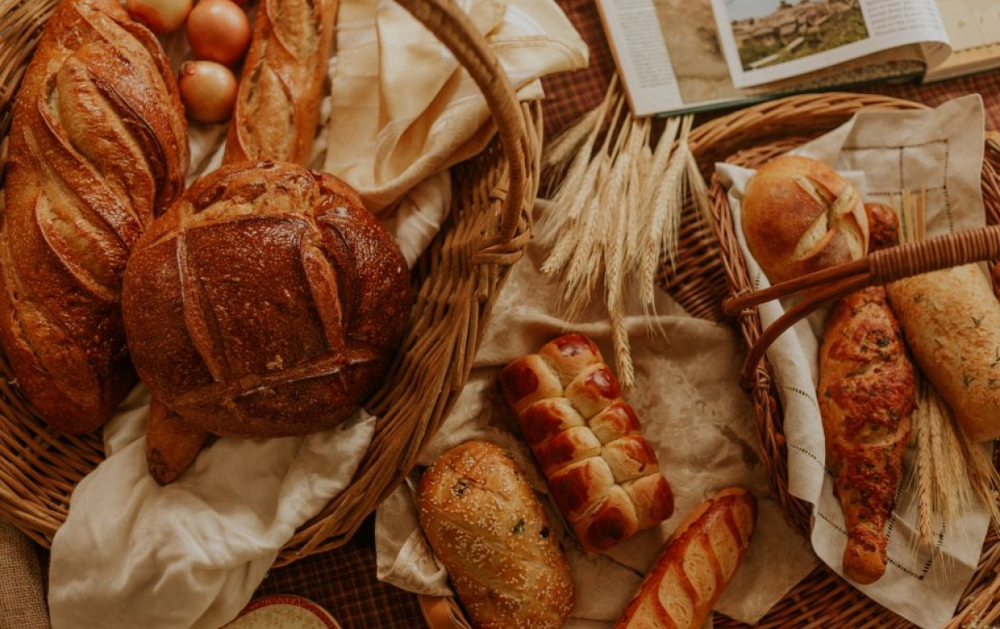
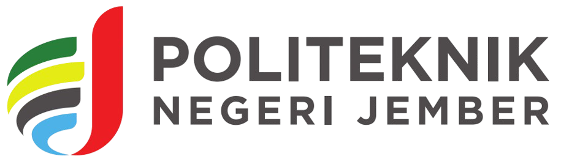

FRESHLY BAKED & WARM DRINKS
Katalog Roti & Produk Segar
Rasakan kelezatan roti hangat melalui beragam pilihan roti dengan cita rasa khas, tekstur lembut, dan kualitas terbaik yang dibuat dengan sepenuh hati.
Lihat Produk →
Pilih roti segar favorit Anda hari ini atau jadwalkan pemesanan khusus untuk acara istimewa. Dipanggang berkala dengan fermentasi lambat 36 jam.

FRESHLY BAKED & WARM DRINKS
Rasakan kelezatan roti hangat melalui beragam pilihan roti dengan cita rasa khas, tekstur lembut, dan kualitas terbaik yang dibuat dengan sepenuh hati.
Lihat Produk →
INSTITUTIONAL VISIT & EDUCATIONAL PROGRAM
Jelajahi proses produksi roti secara langsung melalui kunjungan institusi, praktik pembuatan roti, dan program edukasi yang interaktif.
Mulai Pemesanan →